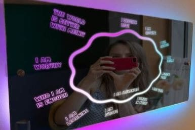

Tu fecha de cumpleaños es:
De acuerdo a tu fecha de nacimiento, tu número de vida es:
[Aquí pondré las características del número de vida]
Why Self-Discovery Cards are an Effective Manifestation Tool
Self-discovery cards help you explore your thoughts and desires, aligning your goals with what you truly want. This process fosters self-reflection and personal growth, enhancing your ability to manifest your objectives.
Did You Know? Looking in the Mirror and Declaring Affirmations is Powerful
An affirmation mirror reinforces your daily declarations and boosts your self-esteem. By repeating positive affirmations, you stay focused on your goals and attract what you desire with a positive mindset.
30% off
Don't lose the offer